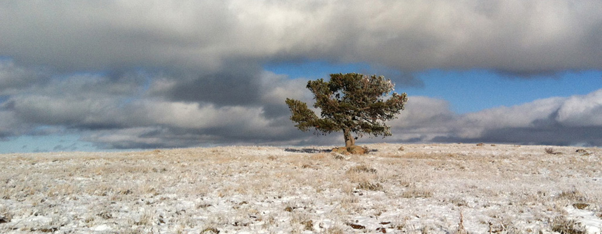

Intro
I have over fifteen years of experience working in digital content creation as a generalist and have recently transformed my career. As I continue migrating into full-stack development, I hope to bring forward as many past skills as possible, or use my new skills to work with CG data.
My path began with CAD drafting but I quickly became interested in 3D modeling and animation and pursued a career in digital content creation. As I continued down that path, I also continued down a parallel path of education. The more arts I learned, the more I came to enjoy the technical processes used to present the art. This led me further down the technical branch of the arts, including 3D prototyping and VR content production.
It wasn't long before I found myself more intrigued by solving the mini-mysteries behind the technical processes, making my life easier and helping others at the same time. This started with really basic HTML tables to make searchable tabular data for airport codes. Then I realized I could cut steps out of workflow just by processing text-based model files with SED scripts. I then began a Max-script to process directories and automatically generate a material library based on that structure. While I was completely out of my depth and never fully finished that script, it only solidified my drive to want to acquire the skills to process data, automate that processing, sort data, and present data in a meaningful way.